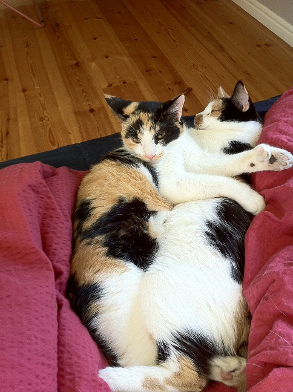
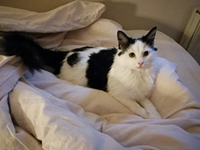

Rufus - Adopterad från Spanien
Rufus adopterades från Spanien i augusti 2018 av mig och min sambo. Då vi har hus i Spanien så brukar vi spendera vår semester där under sommaren och då passar vi på att hjälpa till på det lokala hundstallet. En dag när vi var där och hjälpte till så kom arbetarna in med Rufus, de hade fångat honom på gatan. Han var mörkbrun med otroligt glansig päls, men han var bara skinn och ben och hemskt långa klor. Trots att han bara var skinn och ben och hade klor som måste gjort väldigt ont så var han ändå otroligt glad. Vi kände direkt att han skulle bli en del av vår familj. Vill du läsa mer om Rufus historia och liv i Sverige så kan du klicka på länken som heter Ida i huvudmenyn.

Lucifer och Luna
Luna och Lucifer är två innekatter som bor i en lägenhet tillsammans med Rebeca och hennes sambo. Lucifer eller Lusse som han också kallas är en stor bondkatt på 5,4 kg som hittades i en lada på landet tre månader gammal. Lucifer var hemlös från början och hittades i en lada på landet 3 månader gammal. Till en början var han rädd för människor men nu älskar han alla som kommer på besök.
Luna är en lite mindre honkatt som kom till Rebeca och hennes sambo sommaren 2016. Luna är också en bondkatt och är ett riktigt energiknippe som tycker om att apporera möss. Vill du veta mer om Rebecas katter kan du hitta mer info på Rebacas sida i huvudmenyn.

Buffy & Cordelia
Mina katter är två sköldpaddsfärgade kullsystrar. Jag köpte bara Buffy först men efter ca ett år fick jag veta att hennes syster Cordelia blev vanskött hos sin dåvarande ägare och då lyckades jag ordna så att hon fick flytta hem till oss och nu har de bott hos mig i 9 resp. 8 år. På min sida med namn "Camilla" finns mer info och bilder.

Iris från Vetlanda katthem
2018 adopterade Djurens Vänner Vetlanda ut 89 katter. Iris var en av dessa katter och fick ett hem hos Rebecas mamma Jane. När Jane besökte Vetlanda katthem var Iris bara 2 veckor gammal. Vid besöket tingade Jane iris. Hon fick fylla i ett papper på att hon var intresserad samt information om henne och andra djur i hemmet. Efter en vecka kontaktade katthemmet Jane. Tanken är att den som tingat katten ska gå därifrån med betänketid.
Om du adopterar ett djur har du en vän för livet och ett stort ansvar. Därför är det bra att tänka efter beslutet extra noga.
Jane fick komma på besök flera gånger och hälsa på Iris, eftersom Iris bara var 2 veckor när Jane kom till katthemmet första gången. Vid besöken fattade Iris verkligen tycke för Jane och de bondade verkligen. När Jane äntligen fick hämta Iris var Iris både vaccinerad och chippad. Jane fick betala en adoptionsavgift på 1200 kr men i de ingick också kastrering på Vetlanda Djurklinik. Nu är Iris snart sex månader och ska snart kastreras. Hon trivs bra i sitt nya hem med de andra två katterna Idun och Aiko. Jane tycker själv att adoptionen är det bästa hon gjort. Istället för att köpa en ny katt har hon nu gett en hemlös katt en ny chans i livet.
